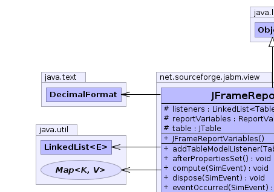
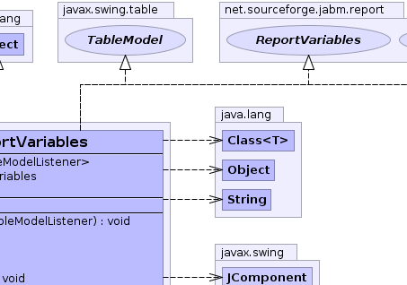
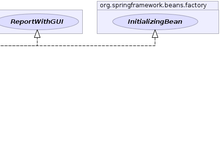
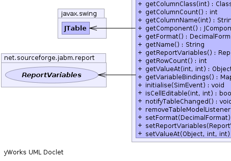
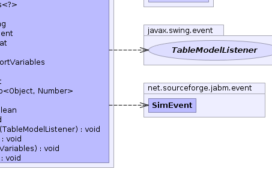

net.sourceforge.jabm.view.JFrameReportVariables
net.sourceforge.jabm.view.JFrameReportVariables
|
|||||||||
| PREV CLASS NEXT CLASS | FRAMES NO FRAMES | ||||||||
| SUMMARY: NESTED | FIELD | CONSTR | METHOD | DETAIL: FIELD | CONSTR | METHOD | ||||||||
java.lang.Object
public class JFrameReportVariables
JFrameReportVariables automatically record other ReportVariables to a swing JTable on a window whenever they are computed.
|  |  |  |
|  |  |
| Field Summary | |
|---|---|
protected java.util.LinkedList<javax.swing.event.TableModelListener> |
listeners
|
protected ReportVariables |
reportVariables
This report collects the data that we will write. |
protected javax.swing.JTable |
table
|
| Constructor Summary | |
|---|---|
JFrameReportVariables()
|
|
| Method Summary | |
|---|---|
void |
addTableModelListener(javax.swing.event.TableModelListener l)
|
void |
afterPropertiesSet()
|
void |
compute(SimEvent event)
Update variables. |
void |
dispose(SimEvent event)
Clean up any side effects (eg close file). |
void |
eventOccurred(SimEvent event)
|
java.lang.Class<?> |
getColumnClass(int columnIndex)
|
int |
getColumnCount()
|
java.lang.String |
getColumnName(int columnIndex)
|
javax.swing.JComponent |
getComponent()
|
java.text.DecimalFormat |
getFormat()
|
java.lang.String |
getName()
|
ReportVariables |
getReportVariables()
|
int |
getRowCount()
|
java.lang.Object |
getValueAt(int rowIndex,
int columnIndex)
|
java.util.Map<java.lang.Object,java.lang.Number> |
getVariableBindings()
Get the values calculated by this report. |
void |
initialise(SimEvent event)
Initialise the variables in response to event. |
boolean |
isCellEditable(int rowIndex,
int columnIndex)
|
void |
notifyTableChanged()
|
void |
removeTableModelListener(javax.swing.event.TableModelListener l)
|
void |
setFormat(java.text.DecimalFormat format)
|
void |
setReportVariables(ReportVariables reportVariables)
|
void |
setValueAt(java.lang.Object aValue,
int rowIndex,
int columnIndex)
|
| Methods inherited from class java.lang.Object |
|---|
clone, equals, finalize, getClass, hashCode, notify, notifyAll, toString, wait, wait, wait |
| Field Detail |
|---|
protected java.util.LinkedList<javax.swing.event.TableModelListener> listeners
protected ReportVariables reportVariables
protected javax.swing.JTable table
| Constructor Detail |
|---|
public JFrameReportVariables()
| Method Detail |
|---|
public void afterPropertiesSet()
throws java.lang.Exception
afterPropertiesSet in interface org.springframework.beans.factory.InitializingBeanjava.lang.Exceptionpublic void compute(SimEvent event)
ReportVariables
compute in interface ReportVariablespublic java.util.Map<java.lang.Object,java.lang.Number> getVariableBindings()
Report
getVariableBindings in interface ReportMap of user-readable variable names to their
associated values.public void eventOccurred(SimEvent event)
eventOccurred in interface EventListenerpublic void dispose(SimEvent event)
ReportVariables
dispose in interface ReportVariablespublic void initialise(SimEvent event)
ReportVariables
initialise in interface ReportVariablespublic ReportVariables getReportVariables()
public void setReportVariables(ReportVariables reportVariables)
public java.text.DecimalFormat getFormat()
public void setFormat(java.text.DecimalFormat format)
public int getRowCount()
getRowCount in interface javax.swing.table.TableModelpublic int getColumnCount()
getColumnCount in interface javax.swing.table.TableModelpublic java.lang.String getColumnName(int columnIndex)
getColumnName in interface javax.swing.table.TableModelpublic java.lang.Class<?> getColumnClass(int columnIndex)
getColumnClass in interface javax.swing.table.TableModel
public boolean isCellEditable(int rowIndex,
int columnIndex)
isCellEditable in interface javax.swing.table.TableModel
public java.lang.Object getValueAt(int rowIndex,
int columnIndex)
getValueAt in interface javax.swing.table.TableModel
public void setValueAt(java.lang.Object aValue,
int rowIndex,
int columnIndex)
setValueAt in interface javax.swing.table.TableModelpublic void addTableModelListener(javax.swing.event.TableModelListener l)
addTableModelListener in interface javax.swing.table.TableModelpublic void removeTableModelListener(javax.swing.event.TableModelListener l)
removeTableModelListener in interface javax.swing.table.TableModelpublic void notifyTableChanged()
public java.lang.String getName()
getName in interface ReportgetName in interface ReportVariablespublic javax.swing.JComponent getComponent()
getComponent in interface ReportWithGUI
|
|||||||||
| PREV CLASS NEXT CLASS | FRAMES NO FRAMES | ||||||||
| SUMMARY: NESTED | FIELD | CONSTR | METHOD | DETAIL: FIELD | CONSTR | METHOD | ||||||||